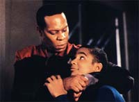
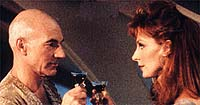
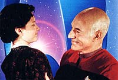

|
Kirk,
Picard e a vida em família
 Ao
longo das séries de Jornada nas Estrelas vemos os
protagonistas trabalhando no espaço, de um lado para o outro
explorando a galáxia, defendendo a Federação e conhecendo muitos
lugares, pessoas e formas de vida. Daí alguns perguntam: porque
eles não ficam um pouco em casa cuidando de sua família, assim
como a maioria dos mortais (pelo menos dos humanos)? Nas telas do
cinema, a Série Clássica e a Nova Geração nos
deram algumas pistas para responder a esta pergunta. Ao
longo das séries de Jornada nas Estrelas vemos os
protagonistas trabalhando no espaço, de um lado para o outro
explorando a galáxia, defendendo a Federação e conhecendo muitos
lugares, pessoas e formas de vida. Daí alguns perguntam: porque
eles não ficam um pouco em casa cuidando de sua família, assim
como a maioria dos mortais (pelo menos dos humanos)? Nas telas do
cinema, a Série Clássica e a Nova Geração nos
deram algumas pistas para responder a esta pergunta.
 Kirk
e Picard não possuem uma família, por assim dizer. Vimos e ouvimos
falar de seus pais, irmãos, sobrinhos, cunhados, mas não muito de
suas mulheres e filhos. A bem da verdade, só mesmo em Deep Space
Nine tivemos Sisko e os seus. Até mesmo na Voyager a
situação de Janeway se complicou bastante depois de ter se perdido
por aí --no bom sentido, é claro!
Na
Série Clássica Kirk arranjava quase sempre um amor em cada
porto, típico dos velhos lobos do espaço, que têm por função
vagar de um canto ao outro. Vivia cheio de amores efêmeros e mal
resolvidos que às vezes atrapalhavam ou ajudavam as suas aventuras.
No cinema, o máximo que vimos foi a sua ex-namorada, a doutora
Carol Marcus, apresentando a Kirk o seu filho David.
Nada dentro do padrão tradicional de papai, mamãe e filhinho, pois
nosso herói foi intimado anos antes pela sua amante a sumir da vida
deles. Isto foi prontamente atendido por Kirk por vários anos, só
se envolvendo com David por acaso em função da missão ao planeta
Genesis.
O relacionamento foi tenso no início, e se transformou em respeito
e admiração mútua depois. Mas a tragédia chega com a morte
mesquinha e relativamente heróica de David tentando salvar a vida
de Saavik das mãos dos Klingons. A dor de Kirk foi grande. Porém,
a morte de seu filho não foi em vão, conforme ele afirma em "Jornada
nas Estrelas VI - A Terra Desconhecida", ajudando a fazer a
paz com os seus inimigos Klingons.
Com Carol Marcus, nada de concreto, a não ser as lembranças do
passado e a aproximação momentânea por causa da morte de David,
de seu amigo Spock e da quase destruição total de sua nave. Na
versão em livro, não-oficial, do filme "Jornada nas
Estrelas - Generations" o autor põe Kirk e Marcus juntos
antes do seu desaparecimento no Nexus. É aí também que ficamos
sabendo que o coração do nosso herói batia anteriormente entre a
Frota Estelar e Antonia, um amor antigo. Mesmo assim, a família de
Kirk ficou sendo mesmo os seus companheiros Spock e McCoy, de acordo
com "Jornada nas Estrelas V - A Última Fronteira".
Toda essa postura reflete as características da Série Clássica,
com suas idéias mais contestadoras e menos comprometida com os
valores tradicionais do século 20. Ela foi feita na época da
discussão dos costumes e da moralidade vigente. Na concepção e na
realização da série, as coisas estabelecidas para a vida familiar
comum não tinham tanta importância assim.
Não foi o mesmo para a Nova Geração, concebida numa época
menos polêmica e mais bem comportada, onde o estúdio não estava
muito disposto a comprar briga com a parte da audiência mais
preocupada com questões individualistas.
Essa foi uma série que trabalhou mais os temas subjetivos, apesar
de tocar em pontos polêmicos do cotidiano. Mas, em geral, eles
estavam enfocados na interpretação dos indivíduos. A família é
apresentada como sendo mais bem comportada na vida dos
personagens/tripulantes da Enterprise. Os conflitos maiores são
entre pais e filhos que vivem/viveram juntos um certo tempo.
 É
claro que esta foi uma série maior que a Clássica e pôde
desenvolver alguns ângulos dos seus personagens. Entretanto, desde
o primeiro instante, a tônica foi sempre mais intimista.
Picard continuou com algumas características de Kirk, como a
solteirice, os casos eventuais por aí, agarrando algumas mulheres
de vez em quando, como Vash, e alguma tripulante da nave. Ele teve
até um filho falso criado por um Ferengi próximo ao fim da série,
e sempre rolou a possibilidade do envolvimento com a dra. Crusher.
 No
episódio "The Inner Light", ele vive uma vida em
família como um qualquer, sendo marido, pai e avô. No cinema,
somos informados de que este era um dos seus sonhos mais profundos,
tal como apareceu no interior do Nexus. Antes de encontrar Kirk, ele
vive a tradicional ceia de Natal com mulher, filhos e seu sobrinho
René. Não é nada, não é nada, as coisas podem caminhar para
isso algum dia, caso Picard cumpra a sua promessa feita a Anij de
voltar ao planeta dos Baku, conforme visto em "Insurreição".
Picard vai se casar ou morrer um solteirão cheio de pretendentes e
pretensões como Kirk? A bolsa de apostas está aberta. Se o
desfecho seguir a lógica dos episódios e das versões do cinema,
podemos até esperar que triunfe o gênero "família
feliz", ainda que tardiamente. Veremos como será, seja para o
gosto do público ou para o conformismo de Hollywood e sua máquina
de contar perdas e ganhos.
Cláudio
Silveira escreve regularmente sobre os filmes com
exclusividade para o Trek Brasilis
|